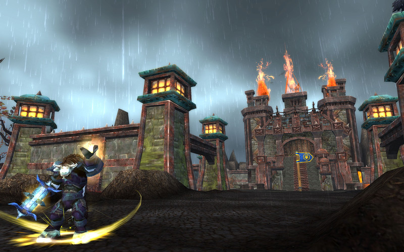
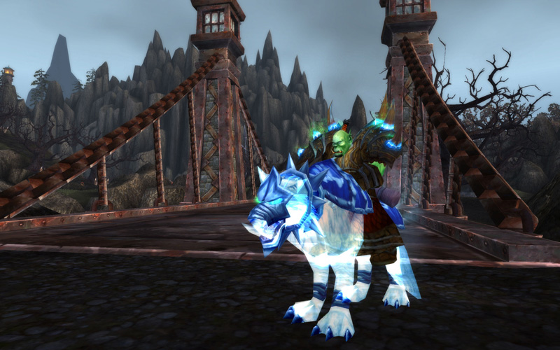
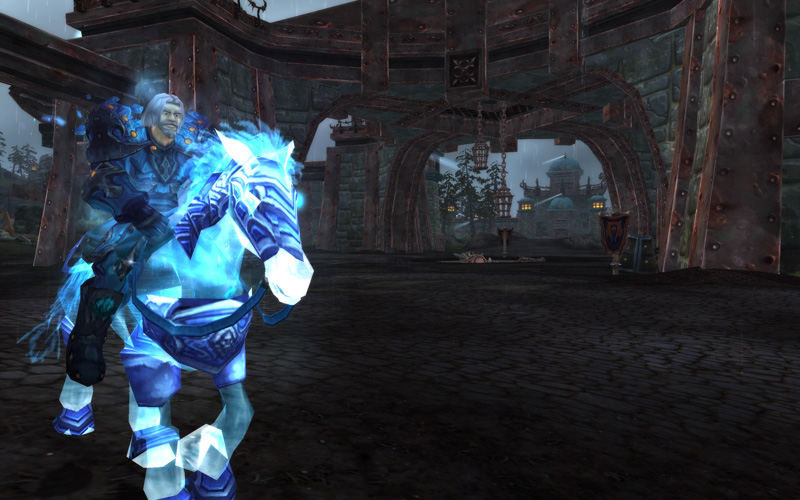
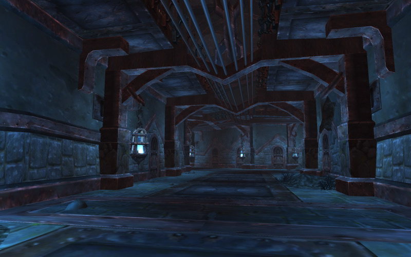
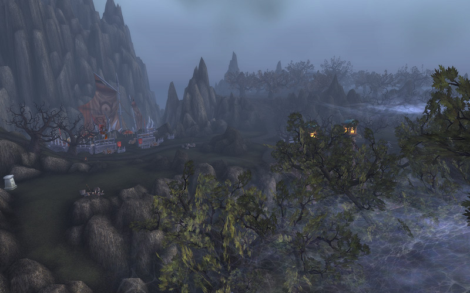
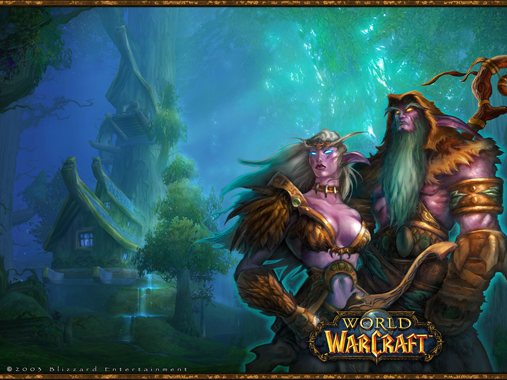

Cataclysm Preview: Tol Barad
An island off the coast of the Eastern Kingdoms, Tol Barad is a historic land now sought-after by the leaders of the Horde and the Alliance. Its strategic, isolated location makes it an ideal stronghold from which to conduct military strikes. In World of Warcraft: Cataclysm, a battle will be waged to seize control of this prized territory. Should you triumph, unique rewards await you. Read more about this all-new world PvP and questing zone here.

During the Second War between orcs and humans, Tol Barad served as an island citadel of Stromgarde. Tol Barad was of great use to the Alliance as an isolated port for preparing military strikes... until it was invaded by the Horde and decimated. Years later the nation of Kul Tiras reclaimed Tol Barad, establishing a magical prison over the ruins of the old fortifications to contain enemy magi, demons, and a host of other deadly criminals. The existence of such a prison remains unknown to most citizens of Azeroth. In the wake of the Cataclysm and with tension building between the Horde and the Alliance, this will all change. Tol Barad will once more serve as a strategic location for amassing a deadly armada of vessels to lay siege upon enemy strongholds within the Eastern Kingdoms. Because both the Horde and the Alliance are prepared to pay in blood for control of Tol Barad, it is yet unknown which of the two factions will emerge victorious from the war-torn island.
 
 
Warcraft Encyclopedia
Main Categories
